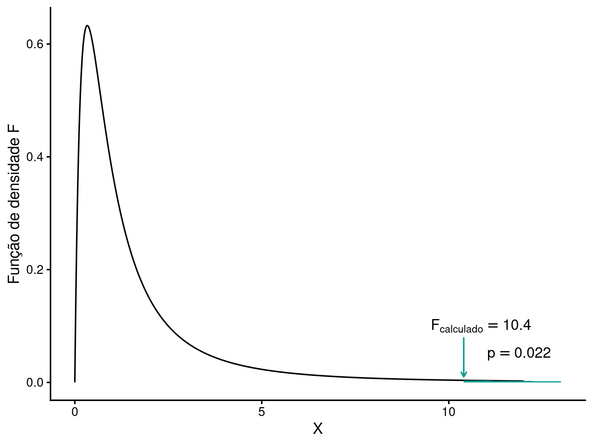

library(gt)
library(tidyverse)
library(patchwork)Comparando variâncias
Métodos de comparação de variâncias, incluindo o teste F e o teste de Levene.
Pacotes, funções e base de dados utilizadas no capítulo
A mesma lógica para testar uma hipótese sobre a média populacional \(\mu\) pode ser utilizada para testar uma hipótese sobre a variância populacional \(\sigma^2\). Veja o exemplo a seguir.
A Tabela 1 é proviniente de um estudo em que foi analizada a riqueza de espécies da macro-fauna da zona entre-marés em nove praias costa da Holanda. Neste exemplo vamos usar as praias 5 e 8.
Código
RIKZ <- read_csv('https://raw.githubusercontent.com/FCopf/datasets/refs/heads/main/RIKZ.csv')
S <- RIKZ |>
subset(Beach == 5 | Beach == 8) |>
select(Richness, Beach)
S |>
gt() |>
cols_width(
Richness ~ px(150),
Beach ~ px(150)
)| Richness | Beach |
|---|---|
| 3 | 5 |
| 22 | 5 |
| 6 | 5 |
| 0 | 5 |
| 6 | 5 |
| 3 | 8 |
| 5 | 8 |
| 7 | 8 |
| 5 | 8 |
| 0 | 8 |
Podemos nos perguntar se em uma praia a riqueza de espécies varia mais que na outra, ou seja, se em uma das praias amostras difere uma das outras em maior grau que na outra praia. Neste caso, estamos interessados em testar as variâncias, não as médias. Para testarmos a homogeneidade de variâncias entre as praias podemos estabelecer as seguintes hipóteses:
1. Estabelcer as hipóteses estatísticas
\(H_0: \sigma^2_5 = \sigma^2_8\)
\(H_a: \sigma^2_5 \ne \sigma^2_8\)
A hipótese nula \(H_0\) estabelece aqui que as variâncias populacionais na praia 1 (\(\sigma^2_5\)) seja igual a variância populacional da praia 2 (\(\sigma^2_8\)), enquento \(H_a\) estabelece que são diferentes.
2. Definir o nível de significância
Neste caso podemos estabelecer \(\alpha = 0,05\) como de costume.
3. Definir a estatística do teste
Existem várias formas possíveis de testar a homogeneidade de variâncias, a mais simples é o teste de razão de variâncias que tem como estatística:
\[F = \frac{s^2_{maior}}{s^2_{menor}}\]
em que \(s^2_{maior}\) é a maior variância amostral e \(s^2_{menor}\) é a menor variância amostral.
4. Calcular a estatística do teste \(F_{calc}\)
Código
S_var = S |>
group_by(Beach) |>
summarise(Variancias = var(Richness),
n = n())
smax = max(S_var[,2])
smin = min(S_var[,2])
n1 = as.numeric(S_var[1,3])
n2 = as.numeric(S_var[2,3])
Fcalc = smax/smin
p = pf(Fcalc, df1 = n1-1, df2 = n2-1, lower.tail = FALSE)Neste exemplo, as variâncias amostrais são:
Praia 5: \(s^2_{1} = 72.8\) e,
Praia 8: \(s^2_{2} = 7\)
O \(F_{calc}\) fica:
\[F_{calc} = \frac{72.8}{7} = 10.4\] mostrando de a variância na praia 5 é \(10.4\) vezes maior que na praia 8.
5. Calcular o valor de p para a distribuição estatística apropriada
No teste de hipótese para uma média a distribuição estatística apropriada para a estatística \(Z\) era a distribuiução normal padronizada. No caso do teste de razão de variâncias, a distribuição apropriada é chamada de ditribuição \(F\), que tem um formato assimétrico à direita. Em nosso exemplo, o valor de \(p = 0.022\).

O formato da distribuição F varia em função dos graus de liberdade do numerador e do denominador. Para este exemplo, os graus de liberdade do numerador e denominador são calculados como \(gl = n-1\). Como foram tomadas 5 amostras em cada uma das praias, \(gl_{numerador} = gl_{denominador} = n-1 = 4\).
Tomada de decisão sobre \(H_0\)
Assumindo que o valor de \(p = 0.022\) é menor que o nível de significância adotado \(\alpha = 0,05\), rejeitamos \(H_0\) e concluímos que a distribuição da riqueza de espécies na praia 5 é mais heterogênea que na praia 8.
1 Teste de razão de variâncias no R
Os cálculos acima podem ser replicados no R com o comando var.test().
var.test(Richness ~ Beach, data = S, alternative = 'greater')
F test to compare two variances
data: Richness by Beach
F = 10.4, num df = 4, denom df = 4, p-value = 0.02173
alternative hypothesis: true ratio of variances is greater than 1
95 percent confidence interval:
1.627993 Inf
sample estimates:
ratio of variances
10.4
Distribuição \(F\) para outros graus de liberdade